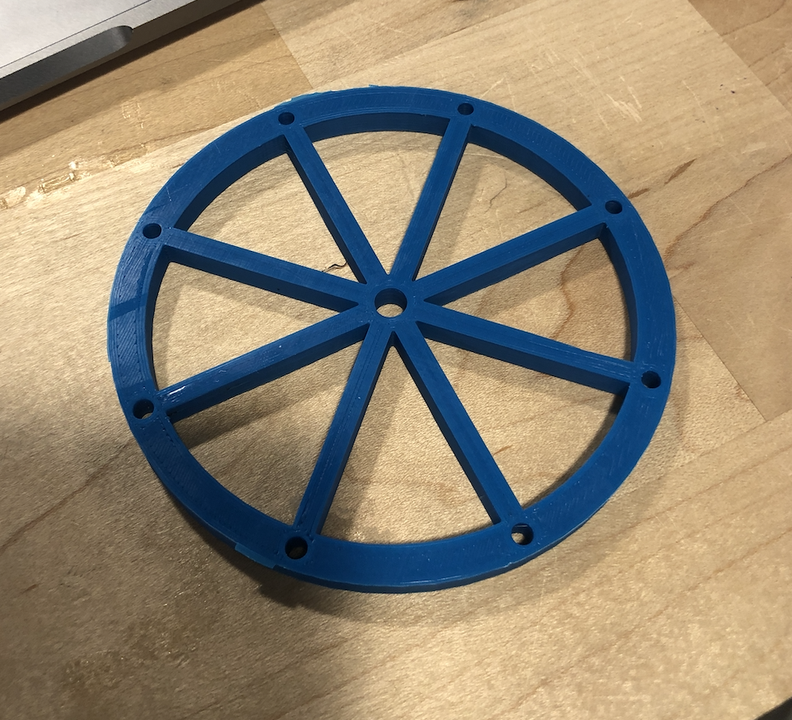

Moving Parts!
Tools: Onshape, Simplify3D, PLA filament, 3D printer, caliper
This project was inspired by the Seattle Great Wheel. I wanted to make a ferris wheel that would spin. I started out looking at pictures of ferris wheels and blueprints to see the overall structure of it.
I started out watching Youtube videos about how to make wheels in Onshape and this really helped with learning the different functions that Onshape has to offer.
To begin playing with Onshape, I made a simple wheel first. Compared to Rhino, Onshape was really easy to use to make solids.
After getting down the basic functions of making a wheel and extruding the solids, I started thinking more about making the wheel look like a ferris wheel. I had a lot of trouble trying to change the planes of the solid once it was already made. But in the process of figuring out how to change the planes, I found out how to use Transform. I used Transform similarly to array planar in Rhino. It was super helpful to align the bars in my wheel to make sure that it is consistent in thickness and position.
Having the wheel down, I figured I need something to hold it up so I made the support base. For the base, I used Sketch mode and just drew the lines out in a triangle form because apparently triangles are good for support according to many attempts to build marshmellow and spaghetti towers. With my first test in assembly, I saw that my base was actually too short! The wheel would be touching the floor! So I made it a bit longer than the radius of the wheel. I think that this was an obvious thing to do but it didn't register until I saw it in assembly that it needs to be higher.
Initially, I thought of using the push-in-rivet to hold the pieces together. But I really want the movement to be smooth so I remember watching a Youtube about making fidget spinners and the person used a pin and cap to keep the pieces together. I made my pin a little bit smaller than the size of the hole because I don't want the fit to be snug but have room for it to spin around.
Using the assembly area, I lined up my parts together to make sure that it is in good measurements. I tried using the revolutate feature and I couldn't figure out
I am not sure why but I ran into a lot of trouble with printing. When I tried to print, the base of the model doesn't stick onto the platform and so the model doesn't actually get printed on a stable base and therefore messes up. I've tried extra glue, heating up higher and also trying out different printers. Thanks to the help of the Mill Staff, the solution was to level the snozzle again and making sure that the platform is properly clipped in. The pieces I printed didn't take too much time to print, but it took two days to troubleshoot why the print was failing.
Printing the wheel was the most satisfacting thing ever because I really liked how precise it printed the bars and holes. Without needing any support, the print came out really nicely!
After I successfully printed all the parts, I assembled it together and the wheel spins! Wooo! Unfortunately, I lost the cap during transit so I will have to go print another one. For the future, I want to make little seat buckets for passengers (very small passengers) to ride it. I purposely made a lot of holes in the wheel to I can make little seats to attach onto it afterwards.
Parts consist of: 2 base brackets, one wheel, one pin and one cap (not pictured because I lost it during transit.